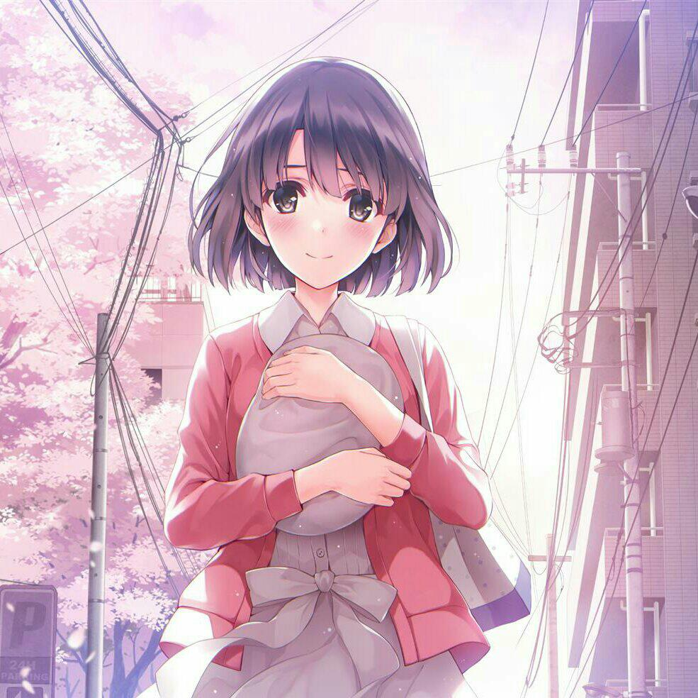
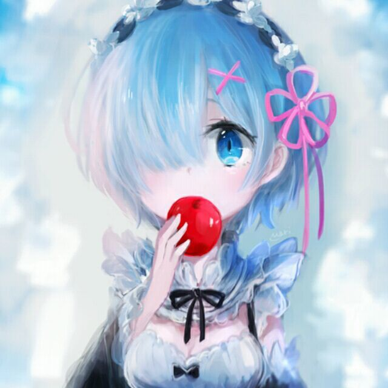
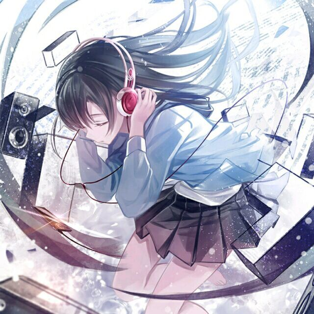
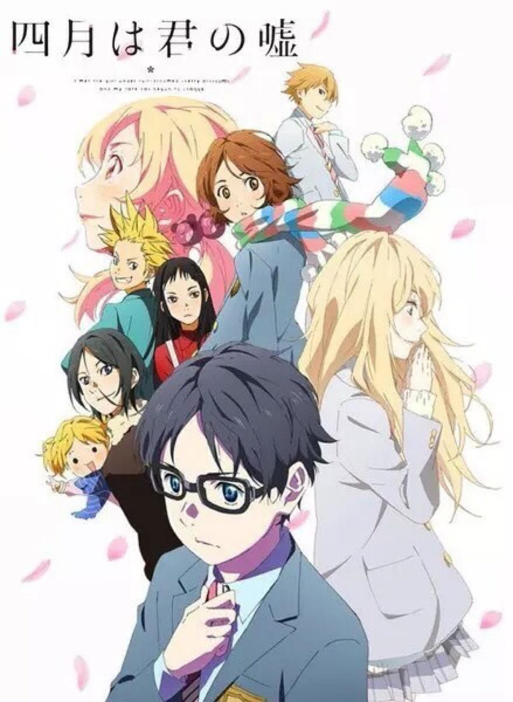

追动漫追了大概有快10年了，应该是陪伴我时间最长的爱好。在我受挫痛苦的时候，动漫总能让我开心起来。我觉得动漫总是从平常生活中很小的角度，用最简单的方式向我们缓缓述说着最简单的道理、最简单的美好。如你硬要问我在其中得到了什么，懂得了什么人生哲理，我很遗憾的告诉你，并没有。但是当我被一些莫须有的烦恼、一些不该出现的想法、一些难过的心情所纠缠的时候，动漫那单纯明白的世界让我的心变得柔软，让我所见的世界变得五彩缤纷。
动漫大体分为四种，恋爱、热血、日常、推理。接下来我就简单的介绍一下这四类的代表作。
| 恋爱番 | 热血番 |
|---|---|
|  |  |
《四月是你的谎言》 《四月是你的谎言》有是非常经典的恋爱番。马公生原本是音乐界的天才少年，但在11岁时的秋天、因母亲过世后就变得无法弹奏钢琴。对于毫无目标的他来说，日常的生活就像是单调、没有颜色的乐谱。 不过，在14岁的春天，公生遇到了一位少女——宫园薰。她的举止粗暴、个性差劲…却是一位才华洋溢的小提琴家，她的出现改变了公生的灰色世界 。自此，公生的心境与日常生活开始有了改变。 |
《火影忍者》 提到火影忍者，相信不看动漫的人也应该有所了解。火影不仅仅是一部动漫，它代表着我们这代人的青春，它承载着我们这代人的梦想，承载着我们这代人的许许多多。火影教会了我们很多，告诉我们如何贯彻自己的忍道，如何对待朋友间的羁绊。辗转十几年，它带给了我们数不尽的欢笑与泪水，还有那份永存心中的感动。 |
恋爱番 |
推理番 |
|
曾经我还想，假如有一天，我长大了，不再喜欢动漫了，到那时，我会伤心还是毫无反应。或许人终究会长大，但，至少不是现在。
| 我永远喜欢加藤惠.html(笑 |
|---|